CODING AGENTS AS PIXEL WORLD MODELS
traex/GPT-5.6-Sol · 0177
点击播放 · 原生 RGB 像素
逐轮保存的候选
回放视频、检查图与代码变化。
每份候选均可单独播放。实际图片检查记录在下方工具轨迹中。
候选 01播放与检查图
点击播放 · 原生 RGB 像素

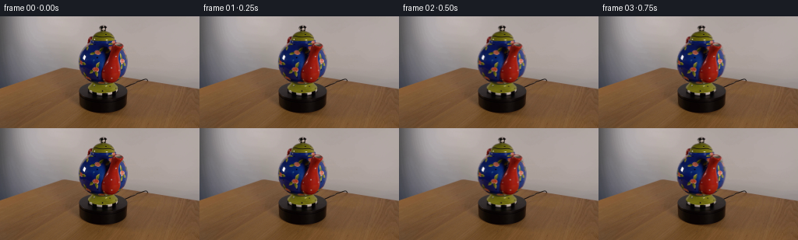
展开代码变化
--- 上一保存版本 +++ 本次保存版本 @@ -0,0 +1,227 @@ +"""Generate a locked-camera video of the teapot turning on its platform. + +The source is deliberately treated as a tiny photographed scene rather than as +a collection of newly drawn shapes. The nearly spherical pot is re-projected +as a rotating spherical texture, while the spout and rear handle are separate +depth layers orbiting the pot's vertical axis. This retains the photograph's +lighting, glaze, decorations, blur, and antialiasing. +""" + +from pathlib import Path + +import cv2 +import numpy as np + +import artifact_io + + +HERE = Path(__file__).resolve().parent + + +def soft_mask(binary: np.ndarray, sigma: float = 0.65) -> np.ndarray: + """Return a lightly feathered float alpha while retaining a solid core.""" + a = binary.astype(np.float32) + if sigma: + a = cv2.GaussianBlur(a, (0, 0), sigma) + return np.clip(a, 0.0, 1.0) + + +def polygon_mask(h: int, w: int, points) -> np.ndarray: + out = np.zeros((h, w), np.uint8) + cv2.fillPoly(out, [np.asarray(points, np.int32)], 1) + return out + + +def ellipse_mask(h: int, w: int, center, axes, start=0, end=360) -> np.ndarray: + out = np.zeros((h, w), np.uint8) + cv2.ellipse(out, center, axes, 0, start, end, 1, -1, cv2.LINE_AA) + return (out > 0).astype(np.uint8) + + +def composite(dst, layer, alpha): + a = alpha[..., None].astype(np.float32) + return layer.astype(np.float32) * a + dst.astype(np.float32) * (1.0 - a) + + +def spherical_map(image, cx, cy, rx, ry, angle, interpolation=cv2.INTER_LINEAR): + """Rotate texture on an orthographically projected ellipsoid. + + Mapping the destination longitude back by ``angle`` makes painted flowers + travel over the curved surface with the expected foreshortening at limbs. + The unavailable rear texture is reflected smoothly around the far limb; + only a very thin strip is ever exposed in this short, slow turn. + """ + h, w = image.shape[:2] + yy, xx = np.mgrid[0:h, 0:w].astype(np.float32) + yn = (yy - cy) / float(ry) + row_radius = rx * np.sqrt(np.maximum(0.0, 1.0 - yn * yn)) + xn = np.divide(xx - cx, np.maximum(row_radius, 0.001)) + theta = np.arcsin(np.clip(xn, -1.0, 1.0)) + source_theta = theta + angle + map_x = cx + row_radius * np.sin(source_theta) + map_y = yy + return cv2.remap( + image, map_x.astype(np.float32), map_y.astype(np.float32), + interpolation, borderMode=cv2.BORDER_REFLECT_101 + ) + + +def cylindrical_map(image, cx, rx, angle): + """Horizontal rotation for short rotationally symmetric pot parts.""" + h, w = image.shape[:2] + yy, xx = np.mgrid[0:h, 0:w].astype(np.float32) + theta = np.arcsin(np.clip((xx - cx) / float(rx), -1.0, 1.0)) + map_x = cx + rx * np.sin(theta + angle) + return cv2.remap( + image, map_x.astype(np.float32), yy, + cv2.INTER_LINEAR, borderMode=cv2.BORDER_REFLECT_101 + ) + + +def transformed_layer(image, alpha, center, new_center, sx=1.0, sy=1.0): + """Affine-transform an RGBA-like photographic cutout.""" + h, w = image.shape[:2] + cx, cy = center + nx, ny = new_center + matrix = np.array([[sx, 0.0, nx - sx * cx], + [0.0, sy, ny - sy * cy]], np.float32) + pic = cv2.warpAffine(image, matrix, (w, h), flags=cv2.INTER_LINEAR, + borderMode=cv2.BORDER_CONSTANT, borderValue=0) + a = cv2.warpAffine(alpha, matrix, (w, h), flags=cv2.INTER_LINEAR, + borderMode=cv2.BORDER_CONSTANT, borderValue=0) + return pic, a + + +def main(): + rgb = cv2.cvtColor(cv2.imread(str(HERE / "first_frame.png"), cv2.IMREAD_COLOR), + cv2.COLOR_BGR2RGB) + h, w = rgb.shape[:2] + assert (w, h) == (256, 144) + + # Stable silhouettes of the round body and its rotationally symmetric + # upper/lower fittings. They do not translate because the vertical shaft + # through the turntable is fixed in the shot. + body = ellipse_mask(h, w, (132, 65), (34, 37)) + body[:29] = 0 + body[101:] = 0 + lid = polygon_mask(h, w, [(113, 18), (119, 14), (143, 14), (151, 22), + (153, 33), (148, 39), (116, 39), (110, 33)]) + foot = polygon_mask(h, w, [(117, 90), (147, 90), (154, 99), (151, 108), + (113, 108), (110, 100)]) + knob = polygon_mask(h, w, [(127, 9), (135, 9), (140, 15), (136, 21), + (126, 21), (122, 15)]) + + # The red pouring spout is a foreground object. A chroma seed inside its + # hand-traced boundary is closed and then filled, retaining the silver rim, + # dark edge, highlights, and all interior photographic detail. + spout_region = polygon_mask( + h, w, + [(142, 31), (153, 32), (160, 37), (160, 42), (154, 47), + (152, 60), (156, 76), (156, 87), (151, 96), (143, 101), + (134, 99), (128, 93), (126, 84), (129, 72), (134, 60), + (137, 45), (137, 36)], + ) + hsv = cv2.cvtColor(rgb, cv2.COLOR_RGB2HSV) + red = (((hsv[..., 0] < 14) | (hsv[..., 0] > 172)) & + (hsv[..., 1] > 105) & (hsv[..., 2] > 65)).astype(np.uint8) + seed = red & spout_region + seed = cv2.morphologyEx(seed, cv2.MORPH_CLOSE, np.ones((5, 5), np.uint8)) + contours, _ = cv2.findContours(seed, cv2.RETR_EXTERNAL, cv2.CHAIN_APPROX_SIMPLE) + spout = np.zeros((h, w), np.uint8) + if contours: + contour = max(contours, key=cv2.contourArea) + cv2.drawContours(spout, [contour], -1, 1, -1) + # A small expansion includes the dark outline and bright metal lip. + spout = cv2.dilate(spout, np.ones((3, 3), np.uint8), iterations=1) & spout_region + # Ensure the opening is one coherent part of the cutout. + cv2.ellipse(spout, (150, 38), (9, 6), 0, 0, 360, 1, -1) + spout &= spout_region + spout_alpha = soft_mask(spout, 0.70) + + # The small red arc at upper left is the far/rear handle. It rotates away + # toward the occluded rear as the opposite spout swings toward camera. + handle_region = polygon_mask( + h, w, [(112, 25), (119, 23), (126, 27), (127, 36), (122, 47), + (115, 53), (107, 50), (104, 43), (106, 33)] + ) + handle_seed = cv2.morphologyEx(red & handle_region, cv2.MORPH_CLOSE, + np.ones((5, 5), np.uint8)) + hc, _ = cv2.findContours(handle_seed, cv2.RETR_EXTERNAL, cv2.CHAIN_APPROX_SIMPLE) + handle = np.zeros((h, w), np.uint8) + if hc: + cv2.drawContours(handle, [max(hc, key=cv2.contourArea)], -1, 1, -1) + handle = cv2.dilate(handle, np.ones((3, 3), np.uint8), 1) & handle_region + handle_alpha = soft_mask(handle, 0.7) + + # Make two clean photographic plates. The room/table plate is needed only + # in narrow slivers vacated by the moving appendages. On the body plate, + # mirror nearby glazed surface beneath the initial spout, avoiding a static + # red ghost when that spout moves across the front. + moving_outside = ((spout | handle) & ~(body | lid | foot | knob)).astype(np.uint8) + moving_outside = cv2.dilate(moving_outside, np.ones((3, 3), np.uint8), 1) + clean_scene = cv2.inpaint(rgb, moving_outside * 255, 3, cv2.INPAINT_TELEA) + + texture = rgb.copy() + hidden = (spout & body).astype(bool) + ys, xs = np.nonzero(hidden) + mirror_x = np.clip(np.rint(264 - xs).astype(int), 0, w - 1) + texture[ys, xs] = rgb[ys, mirror_x] + # Blend the mirrored fill at its edge; the moving foreground covers most of + # this area in every frame, but the soft fill prevents a hard reveal. + hidden_soft = soft_mask(hidden.astype(np.uint8), 1.6)[..., None] + texture = np.clip(texture * hidden_soft + rgb * (1.0 - hidden_soft), 0, 255).astype(np.uint8) + + body_a = soft_mask(body, 0.56) + lid_a = soft_mask(lid, 0.52) + foot_a = soft_mask(foot, 0.55) + knob_a = soft_mask(knob, 0.48) + + frames = [rgb.copy()] + for i in range(1, 20): + p = i / 19.0 + # 36 degrees in five seconds: unmistakable but still a slow scientific + # turntable demonstration. Smoothstep gives a gentle motor start/stop. + q = p * p * (3.0 - 2.0 * p) + angle = np.deg2rad(36.0 * q) + + frame = clean_scene.astype(np.float32) + + # Rear handle first, so the blue body correctly occludes it. + handle_x = 115.0 + 8.0 * q + hp, ha = transformed_layer(rgb, handle_alpha, (115, 39), + (handle_x, 39), sx=1.0 - 0.31 * q, + sy=1.0 - 0.10 * q) + ha *= (1.0 - 0.42 * q) + frame = composite(frame, hp, ha) + + # Painted motifs flow over the pot's true curved silhouette. + body_pic = spherical_map(texture, 132, 65, 34, 37, angle) + frame = composite(frame, body_pic, body_a) + + # The lid, finial, and green lower collar rotate about the same shaft. + lid_pic = cylindrical_map(texture, 132, 22, angle) + frame = composite(frame, lid_pic, lid_a) + foot_pic = cylindrical_map(texture, 132, 22, angle) + frame = composite(frame, foot_pic, foot_a) + knob_pic = cylindrical_map(texture, 131, 8, angle) + frame = composite(frame, knob_pic, knob_a) + + # Clockwise viewed from above moves the front-right spout leftward to + # the center/front. Its slight broadening is perspective foreshortening + # diminishing as it faces the locked camera. + spout_x = 143.0 - 11.0 * q + sp, sa = transformed_layer(rgb, spout_alpha, (143, 67), + (spout_x, 67), sx=1.0 + 0.12 * q, + sy=1.0 + 0.015 * q) + frame = composite(frame, sp, sa) + + frames.append(np.clip(np.rint(frame), 0, 255).astype(np.uint8)) + + frames = np.stack(frames, axis=0) + # Contract-critical exactness of the supplied first frame. + frames[0] = rgb + artifact_io.save(frames, HERE) + + +if __name__ == "__main__": + main()
候选 02播放与检查图
点击播放 · 原生 RGB 像素

展开代码变化
--- 上一保存版本
+++ 本次保存版本
@@ -179,40 +179,40 @@
frames = [rgb.copy()]
for i in range(1, 20):
p = i / 19.0
- # 36 degrees in five seconds: unmistakable but still a slow scientific
- # turntable demonstration. Smoothstep gives a gentle motor start/stop.
+ # Fourteen degrees in five seconds is a genuinely slow laboratory
+ # turntable demonstration and stays within the photographed hemisphere.
+ # Smoothstep gives a gentle motor start/stop.
q = p * p * (3.0 - 2.0 * p)
- angle = np.deg2rad(36.0 * q)
+ angle = np.deg2rad(14.0 * q)
frame = clean_scene.astype(np.float32)
# Rear handle first, so the blue body correctly occludes it.
- handle_x = 115.0 + 8.0 * q
+ handle_x = 115.0 + 3.0 * q
hp, ha = transformed_layer(rgb, handle_alpha, (115, 39),
- (handle_x, 39), sx=1.0 - 0.31 * q,
- sy=1.0 - 0.10 * q)
- ha *= (1.0 - 0.42 * q)
+ (handle_x, 39), sx=1.0 - 0.12 * q,
+ sy=1.0 - 0.04 * q)
+ ha *= (1.0 - 0.16 * q)
frame = composite(frame, hp, ha)
# Painted motifs flow over the pot's true curved silhouette.
body_pic = spherical_map(texture, 132, 65, 34, 37, angle)
frame = composite(frame, body_pic, body_a)
- # The lid, finial, and green lower collar rotate about the same shaft.
- lid_pic = cylindrical_map(texture, 132, 22, angle)
- frame = composite(frame, lid_pic, lid_a)
+ # The lid and finial are rotationally symmetric; under fixed lighting
+ # their silhouette and broad highlights remain effectively stationary.
+ frame = composite(frame, rgb, lid_a)
foot_pic = cylindrical_map(texture, 132, 22, angle)
frame = composite(frame, foot_pic, foot_a)
- knob_pic = cylindrical_map(texture, 131, 8, angle)
- frame = composite(frame, knob_pic, knob_a)
+ frame = composite(frame, rgb, knob_a)
# Clockwise viewed from above moves the front-right spout leftward to
# the center/front. Its slight broadening is perspective foreshortening
# diminishing as it faces the locked camera.
- spout_x = 143.0 - 11.0 * q
+ spout_x = 143.0 - 5.0 * q
sp, sa = transformed_layer(rgb, spout_alpha, (143, 67),
- (spout_x, 67), sx=1.0 + 0.12 * q,
- sy=1.0 + 0.015 * q)
+ (spout_x, 67), sx=1.0 + 0.045 * q,
+ sy=1.0 + 0.006 * q)
frame = composite(frame, sp, sa)
frames.append(np.clip(np.rint(frame), 0, 255).astype(np.uint8))
候选 03播放与检查图

候选 04播放与检查图
点击播放 · 原生 RGB 像素
展开代码变化
--- 上一保存版本
+++ 本次保存版本
@@ -58,7 +58,10 @@
xn = np.divide(xx - cx, np.maximum(row_radius, 0.001))
theta = np.arcsin(np.clip(xn, -1.0, 1.0))
source_theta = theta + angle
- map_x = cx + row_radius * np.sin(source_theta)
+ # Sample just inside the photographed glaze boundary. Exact limb pixels
+ # contain antialiased room color, which would otherwise smear inward as the
+ # sphere turns.
+ map_x = cx + 0.91 * row_radius * np.sin(source_theta)
map_y = yy
return cv2.remap(
image, map_x.astype(np.float32), map_y.astype(np.float32),
@@ -161,15 +164,17 @@
moving_outside = cv2.dilate(moving_outside, np.ones((3, 3), np.uint8), 1)
clean_scene = cv2.inpaint(rgb, moving_outside * 255, 3, cv2.INPAINT_TELEA)
- texture = rgb.copy()
- hidden = (spout & body).astype(bool)
- ys, xs = np.nonzero(hidden)
- mirror_x = np.clip(np.rint(264 - xs).astype(int), 0, w - 1)
- texture[ys, xs] = rgb[ys, mirror_x]
- # Blend the mirrored fill at its edge; the moving foreground covers most of
- # this area in every frame, but the soft fill prevents a hard reveal.
- hidden_soft = soft_mask(hidden.astype(np.uint8), 1.6)[..., None]
- texture = np.clip(texture * hidden_soft + rgb * (1.0 - hidden_soft), 0, 255).astype(np.uint8)
+ # Reconstruct the small patch of blue glaze hidden by the initial spout.
+ # Telea interpolation uses its surrounding blue/floral neighborhood; the
+ # foreground cutout continues to cover nearly all of this conservative fill.
+ hidden_region = polygon_mask(
+ h, w, [(136, 31), (154, 33), (154, 55), (158, 78),
+ (155, 99), (128, 102), (124, 86), (131, 59)]
+ ) & body
+ reconstructed = cv2.inpaint(rgb, hidden_region * 255, 5, cv2.INPAINT_TELEA)
+ hidden_soft = soft_mask(hidden_region, 1.1)[..., None]
+ texture = np.clip(reconstructed * hidden_soft + rgb * (1.0 - hidden_soft),
+ 0, 255).astype(np.uint8)
body_a = soft_mask(body, 0.56)
lid_a = soft_mask(lid, 0.52)
候选 05播放与检查图
候选 06播放与检查图
点击播放 · 原生 RGB 像素
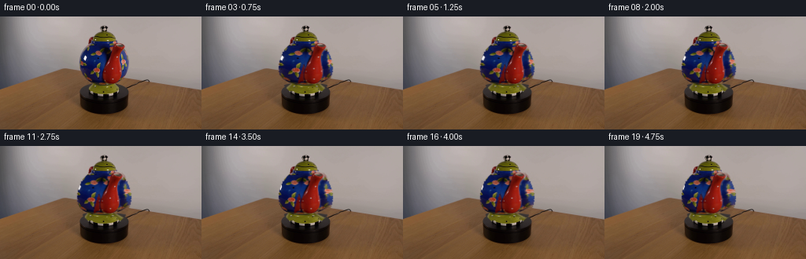
展开代码变化
--- 上一保存版本
+++ 本次保存版本
@@ -61,7 +61,7 @@
# Sample just inside the photographed glaze boundary. Exact limb pixels
# contain antialiased room color, which would otherwise smear inward as the
# sphere turns.
- map_x = cx + 0.91 * row_radius * np.sin(source_theta)
+ map_x = cx + 0.80 * row_radius * np.sin(source_theta)
map_y = yy
return cv2.remap(
image, map_x.astype(np.float32), map_y.astype(np.float32),
@@ -171,7 +171,12 @@
h, w, [(136, 31), (154, 33), (154, 55), (158, 78),
(155, 99), (128, 102), (124, 86), (131, 59)]
) & body
- reconstructed = cv2.inpaint(rgb, hidden_region * 255, 5, cv2.INPAINT_TELEA)
+ reconstructed = rgb.copy()
+ hy, hx = np.nonzero(hidden_region)
+ # Opposite-side samples are the same cobalt glaze and floral painting,
+ # giving a much more plausible completion than flat-color synthesis.
+ reflected_x = np.clip(264 - hx, 101, 159)
+ reconstructed[hy, hx] = rgb[hy, reflected_x]
hidden_soft = soft_mask(hidden_region, 1.1)[..., None]
texture = np.clip(reconstructed * hidden_soft + rgb * (1.0 - hidden_soft),
0, 255).astype(np.uint8)
@@ -207,8 +212,7 @@
# The lid and finial are rotationally symmetric; under fixed lighting
# their silhouette and broad highlights remain effectively stationary.
frame = composite(frame, rgb, lid_a)
- foot_pic = cylindrical_map(texture, 132, 22, angle)
- frame = composite(frame, foot_pic, foot_a)
+ frame = composite(frame, rgb, foot_a)
frame = composite(frame, rgb, knob_a)
# Clockwise viewed from above moves the front-right spout leftward to
候选 07播放与检查图
点击播放 · 原生 RGB 像素
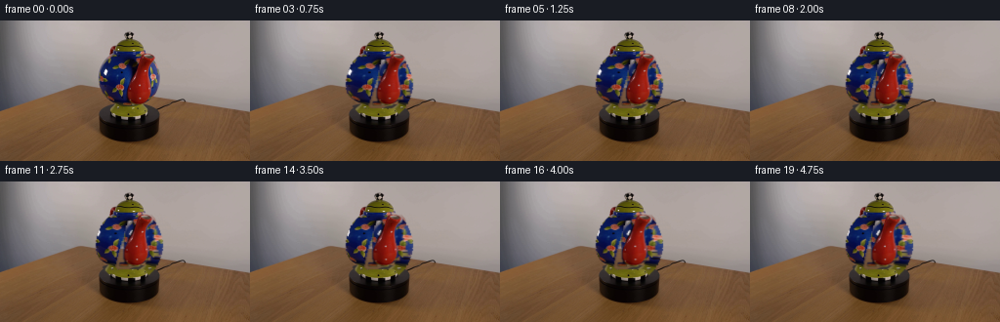
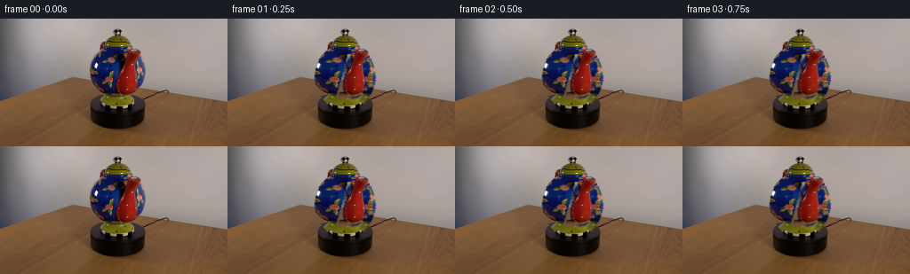
展开代码变化
--- 上一保存版本
+++ 本次保存版本
@@ -175,8 +175,8 @@
hy, hx = np.nonzero(hidden_region)
# Opposite-side samples are the same cobalt glaze and floral painting,
# giving a much more plausible completion than flat-color synthesis.
- reflected_x = np.clip(264 - hx, 101, 159)
- reconstructed[hy, hx] = rgb[hy, reflected_x]
+ nearby_x = np.clip(hx - 30, 101, 125)
+ reconstructed[hy, hx] = rgb[hy, nearby_x]
hidden_soft = soft_mask(hidden_region, 1.1)[..., None]
texture = np.clip(reconstructed * hidden_soft + rgb * (1.0 - hidden_soft),
0, 255).astype(np.uint8)
可观测工具轨迹
实际执行的命令与返回图片。
命令 1exit 0
/bin/bash -lc "cat prompt.txt && printf '\\n--- GENERATION_RULES ---\\n' && cat GENERATION_RULES.md"
命令 2exit 1
/bin/bash -lc "find . -maxdepth 2 -type f -printf '%p\\n' | sort && printf '\\n--- binaries ---\\n' && command -v ffmpeg && command -v python3 && python3 - <<'PY' mods=['cv2','PIL','numpy','torch','diffusers','imageio'] for m in mods: try: x=__import__(m); print(m,'OK',getattr(x,'__version__','')) except Exception as e: print(m,'NO',str(e)[:100]) PY"
命令 3exit 0
/bin/bash -lc 'cat artifact_io.py'
命令 4exit 0
/bin/bash -lc 'set +e for x in python python3 ffmpeg convert magick; do printf "$x: "; command -v "$x" || true; done python3 - <<'"'PY' mods=['cv2','PIL','numpy','imageio','scipy','skimage'] for m in mods: try: x=__import__(m); print(m,'OK',getattr(x,'__version__','')) except Exception as e: print(m,'NO',str(e)[:160]) PY"
命令 5exit 0
/bin/bash -lc "python3 - <<'PY'
from PIL import Image
im=Image.open('first_frame.png')
im.crop((88,4,174,110)).resize((516,636)).save('.tmp/crop.png')
PY"命令 6exit 0
/bin/bash -lc "python3 generate.py && python3 - <<'PY'
import numpy as np
from PIL import Image
f=np.stack([np.array(Image.open(f'frames/{i:02d}.png')) for i in range(20)])
s=np.array(Image.open('first_frame.png'))
print('shape/dtype',f.shape,f.dtype)
print('frame0 exact',np.array_equal(f[0],s),'maxerr',np.abs(f[0].astype(int)-s).max())
print('changed pixels consecutive',[(f[i]"'!=f[i-1]).any(2).sum() for i in range(1,20)])
print('"'mean abs consecutive',[round(np.abs(f[i].astype(float)-f[i-1]).mean(),3) for i in range(1,20)])
PY"命令 7exit 0
/bin/bash -lc 'du -h pixels.npz index.html inspection.png && find frames -type f | wc -l'
命令 8exit 0
/bin/bash -lc "python3 - <<'PY'
from PIL import Image
for i in (0,5,10,15,19):
im=Image.open(f'frames/{i:02d}.png').crop((90,5,175,112)).resize((510,642))
im.save(f'.tmp/f{i:02d}.png')
PY"命令 9exit 0
/bin/bash -lc "python3 generate.py && python3 - <<'PY'
import numpy as np
from PIL import Image
f=np.stack([np.array(Image.open(f'frames/{i:02d}.png')) for i in range(20)])
s=np.array(Image.open('first_frame.png'))
print('shape',f.shape,'dtype',f.dtype,'frame0_exact',np.array_equal(f[0],s))
out=(f[-1,:,:90]"'!=s[:,:90]).any(2).sum()+(f[-1,:,175:]!=s[:,175:]).any(2).sum()
print('"'outside motion bbox changed final:',out)
print('final MAD',np.abs(f[-1].astype(float)-s).mean())
PY"命令 10exit 0
/bin/bash -lc "python3 - <<'PY'
from PIL import Image
for i in (10,19): Image.open(f'frames/{i:02d}.png').crop((92,6,173,111)).resize((486,630)).save(f'.tmp/final{i}.png')
PY"命令 11exit 0
/bin/bash -lc "python3 generate.py && python3 - <<'PY'
from PIL import Image
import numpy as np
s=np.array(Image.open('first_frame.png')); f=np.array(Image.open('frames/00.png'))
assert np.array_equal(s,f)
for i in (10,19): Image.open(f'frames/{i:02d}.png').crop((92,6,173,111)).resize((486,630)).save(f'.tmp/rev{i}.png')
print('validated first frame, outputs regenerated')
PY"命令 12exit 0
/bin/bash -lc "python3 generate.py && python3 - <<'PY'
from PIL import Image
import numpy as np
s=np.array(Image.open('first_frame.png')); f=np.array(Image.open('frames/00.png'))
assert np.array_equal(s,f)
Image.open('frames/19.png').crop((92,6,173,111)).resize((486,630)).save('.tmp/rev2.png')
print('shape',np.load('pixels.npz')['pixels'].shape,'frames',len(list(__import__('pathlib').Path('frames').glob('*.png'))))
PY"命令 13exit 0
/bin/bash -lc "python3 generate.py && python3 - <<'PY'
from pathlib import Path
from PIL import Image
import numpy as np
src=np.array(Image.open('first_frame.png'))
files=sorted(Path('frames').glob('*.png'))
frames=np.stack([np.array(Image.open(p)) for p in files])
assert len(files)==20 and frames.shape==(20,144,256,3) and frames.dtype==np.uint8
assert np.array_equal(frames[0],src)
assert np.load('pixels.npz')['pixels'].shape==(144,256,20)
assert Path('index.html').is_file() and Path('inspection.png').is_file()
print('PASS: 20 RGB frames, 256x144, uint8, exact frame 00, artifact bundle present')
print('frame19 changed pixels:',int(np.any(frames[19]"'!=src,axis=2).sum()))
PY'视觉工具实际返回图片 1

视觉工具实际返回图片 2
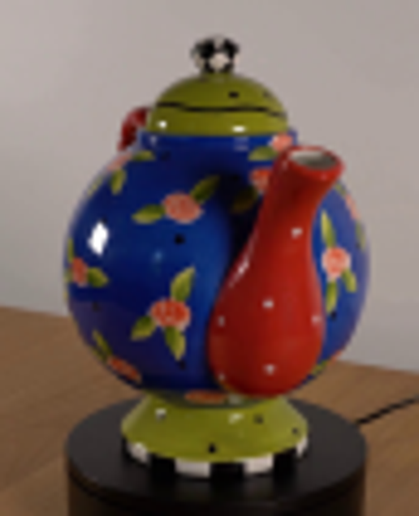
视觉工具实际返回图片 3
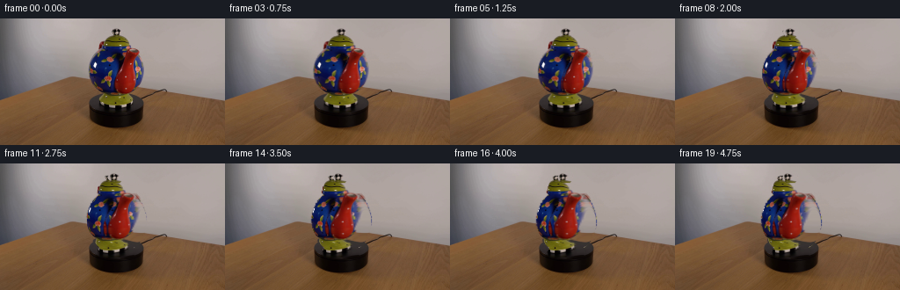
视觉工具实际返回图片 4
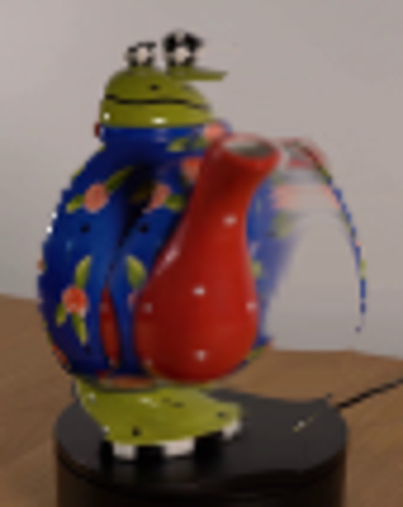
视觉工具实际返回图片 5
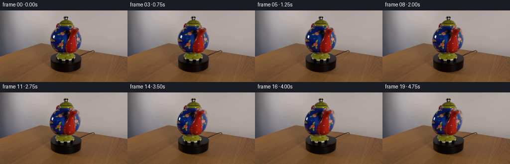
视觉工具实际返回图片 6
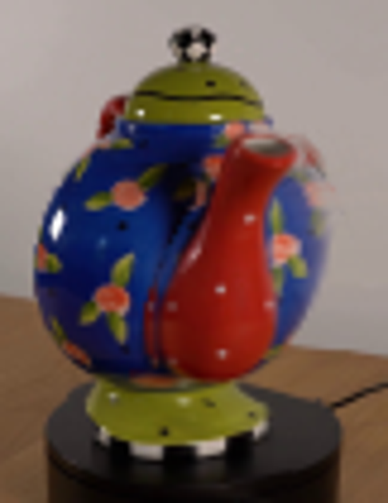
视觉工具实际返回图片 7
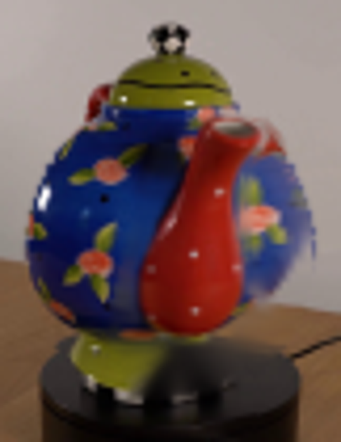
视觉工具实际返回图片 8
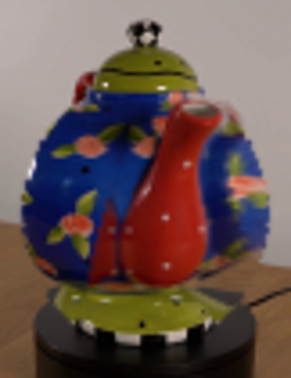
保存候选 7 份；完成命令 13 次；可验证图片返回 8 张。原始 API 响应与完整日志保留在本地。